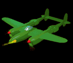

Esta misión se estableció teniendo en cuenta que dentro de los roles de las Fuerzas Militares, la Fuerza Aérea es responsable por el dominio del espacio aéreo, en cumplimiento del mandato constitucional emanado del Artículo 217 de nuestra Carta Magna.
Dentro del contenido teórico de la Misión, se distingue claramente que la Fuerza Aérea es la única organización con capacidad para dominar el espacio aéreo, campo de acción involucrado dentro de la responsabilidad de las Fuerzas Militares, teniendo en cuenta que su concepto operacional y sus principios de empleo son característicos y propios de esta Fuerza.
 El espacio aéreo es la esencia de la Fuerza Aérea; es su razón de ser, no sólo como Fuerza de defensa activa y pasiva al servicio de la Nación, sino como Fuerza decisiva para el futuro de paz y cordialidad que construye el pueblo colombiano.
Socialmente, la Fuerza Aérea garantiza, durante las 24 horas del día, la protección única y permanente del espacio aéreo nacional; y pese a que su accionar y empleo de aeronaves, la podrían ubicar como ente contaminador, extiende su garantía a través de proyectos de protección ambiental que procuran una mayor producción de oxígeno, no sólo para la nación de la que hace parte de su defensa, sino para beneficio global.
Visión

El desarrollo tecnológico en todos los ambientes de la Fuerza Aérea, es la orientación hacia un futuro deseado, no sólo por la comunidad aérea, sino por el pueblo colombiano. Ese objetivo, más que un sueño, es una realidad y cualidad de un Fuerza Aérea con futuro. Obviamente, la tecnología de punta exige de un talento humano muy preparado para operarla, con un compromiso de alto nivel y con competencias altamente calificadas, consecuentes con la velocidad, el alcance nacional, la precisión y la flexibilidad, que hagan de la Fuerza una Institución líder del poder aeroespacial a nivel nacional e internacional.
Una Fuerza Aérea con una cultura de aprendizaje permanente, requiere de un sustento fuerte de sus valores, que le permita una administración orientada por ellos y, que a su vez, sean ellos quienes orienten sus decisiones. Afianzarse en los valores, no sólo indica su práctica permanente, sino una continua construcción de ellos, que conduzca a conductas éticas individuales, las que conjugadas desarrollan una cultura organizacional, que permita fortalecer la legitimidad de la Fuerza en el cumplimiento de su misión.
La aplicación correcta de los valores en el accionar del día a día durante el cumplimiento de las operaciones aéreas, el mantenimiento de un personal altamente seleccionado desde el momento de su incorporación, así como a través de su carrera militar, y la aplicación de tecnología de punta, permitirán que la defensa de la nación, desde el accionar aéreo, sea decisiva para ganar la guerra y garantizar espacios de convivencia pacífica.